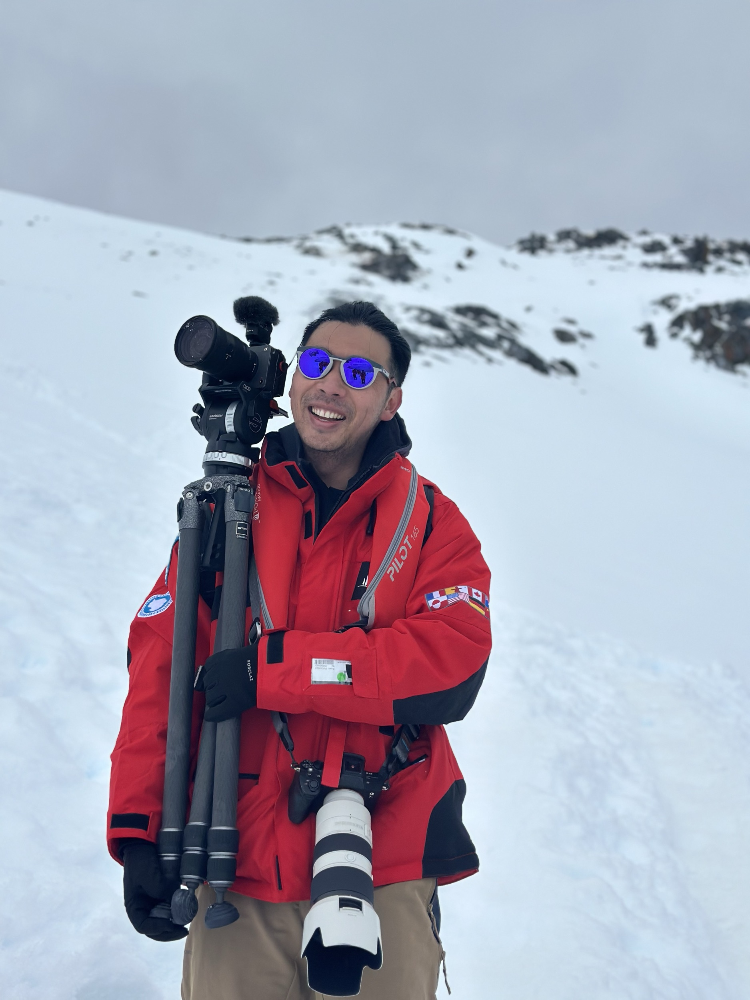

关于 About
关于我，关于这个网站，关于我相信的事。

姬航宇，纪录片导演、摄影师、写作者，现任西安音乐学院录音艺术专业教师。
2008 年进入中国传媒大学录音艺术专业并获得学士学位，2013 年赴英国伯恩茅斯大学电影电视声音制作专业深造并获得硕士学位。2016 年起正式任教于西安音乐学院录音艺术专业，同年创办西安东西映画文化传媒有限公司。
摄影是他的挚爱，习惯用相机记录身边的一切。这些年，他一方面持续进行纪录片拍摄，足迹遍及南极半岛、加拉帕戈斯、巴布亚新几内亚等地；另一方面在传统艺术类教育中探索新技术的教学实践。自 2023 年起，他开始系统学习并讲授区块链相关内容，同时关注区块链在教育场景中的应用；近年也将大模型、创作工具与声音、影像、写作训练结合，观察学生如何借助 AI 表达想法、完成作品，并重新理解学习与创作的关系。展望未来，他致力于利用人工智能技术，让视听作品以更好的方式抵达观众。
Hangyu Ji is a documentary filmmaker, photographer, writer, and lecturer in Recording Arts at Xi'an Conservatory of Music.
In 2008, he entered the Recording Arts program at Communication University of China, where he received his Bachelor's degree. In 2013, he continued his studies in Sound Production for Film and Television at Bournemouth University in the UK and received his Master's degree. Since 2016, he has taught Recording Arts at Xi'an Conservatory of Music and founded Xi'an Everything Film & Culture Media Co., Ltd. in the same year.
Photography is his quiet obsession — a way of holding onto the world around him. In recent years, he has continued making documentaries, with work taking him to the Antarctic Peninsula, the Galápagos, and Papua New Guinea. At the same time, he has been exploring how emerging technologies can enter traditional arts education. Since 2023, he has studied and taught blockchain-related subjects, while also examining how blockchain may be used in educational contexts. He has also been connecting large language models and creative tools with training in sound, image-making, and writing. Looking ahead, he is committed to using artificial intelligence to help audiovisual work reach audiences in richer and more effective ways.